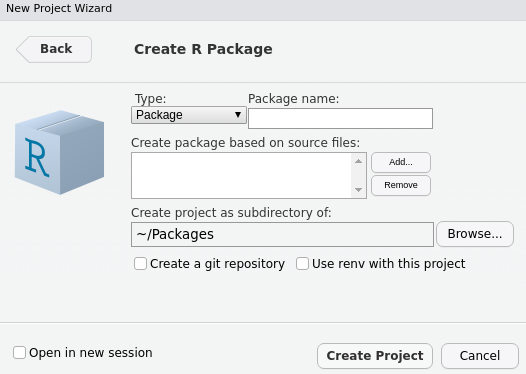

install.packages(c("devtools", "usethis"))02 Prerequisites
本章介绍一些后续会用到的必要知识：
- 使用devtools构建R包
- shiny框架
- Json数据格式
- JavaScript基础
即：以shiny框架为基础，通过Json格式数据，沟通R与JavaScript，将这种沟通方式打包为R包，方便调用与测试。
构建R包
这里简单简绍构建R包的方法，具体可参考 R Packages
创建R包
使用Rstudio创建R包：File > New Project > New Directory > R Package

使用usethis创建R包，Rstudio使用相同的命令创建R包。
# 在当前工作目录下创建名为test的R包，同时自动设置工作目录为test包路径
usethis::create_package("test")
# getwd()Metadata
每个R包都有DESCRIPTION文件，该文件包含包名、版本、作者、依赖等信息。例如下面是test包的默认DESCRIPTION文件：
Package: test
Title: What the Package Does (One Line, Title Case)
Version: 0.0.0.9000
Authors@R:
person("First", "Last", , "first.last@example.com", role = c("aut", "cre"))
Description: What the package does (one paragraph).
License: `use_mit_license()`, `use_gpl3_license()` or friends to pick a
license
Encoding: UTF-8
Roxygen: list(markdown = TRUE)
RoxygenNote: 7.3.2假如你创建了一个依赖stringr包的脚本string.R，那么你需要在DESCRIPTION文件中添加依赖项。如果有多个，使用,分割。
Imports:
stringr,
dplyr也可以使用usethis添加依赖项。
# add stringr under Imports
usethis::use_package("stringr")Suggests与Imports类似，但不会强制安装。
R code
R 包有着严格的结构要求，R/目录只能用来存放以.R结尾的R文件。上面的string.R文件就是在R/目录下。
Documentation
roxygen2包可以识别在R函数前添加#'开头的注释，自动生成使用?进行查询的函数说明文档。这些说明文档以.Rd结尾，存放在man/目录下。
在注释中，可以使用一些roxygen2标签，如@param、@example、@importFrom、@export等。
@param: 参数说明，参数类型，参数描述。@example: 函数使用示例。@importFrom: 导入R包，该包中的函数。@export: 导出函数，使得该函数可以被用户调用。
#' Strings Length
#'
#' Returns the number of characters in strings.
#'
#' @param strings A vector of character strings.
#'
#' @example string_length(c("hello", "world"))
#'
#' @importFrom stringr str_length
#'
#' @export
string_length <- function(strings) {
str_length(strings) # namespace removed
}roxygen2 包会收集函数名，生成NAMESPACE文件，该文件包含了被该包导入和导出的函数。例如将上面的code替换之前的string.R文件，然后使用devtools::document()命令，生成man/文件夹和NAMESPACE文件。
Installed files
在inst/目录下，用来存放一些能够被用户使用system.file()获取的文件。在本书中，你会见到很多这种用法。
# return path to `inst/dependency.js` in `myPackage`
path <- system.file("dependency.js", package = "myPackage")Build, load and install
在使用devtools::document()生成说明文档后，可以使用devtools::install()进行本地安装。但在实际开发R包时，通常使用devtools::load_all()进行本地加载。下面是一个开发R包的惯用流程：
- Write some code
- Run
devtools::document()(if documentation tags have changed) - Run
devtools::load_all() - Repeat
Json
JSON (JavaScript Object Notation) 是一种流行的数据交换格式。在R中，我们使用jsonlite包进行序列化与反序列化。
Serialising
Json数据格式类似R中的list，可以存放除dataframe外的任何数据。下面是一个简单示例，参数pretty控制输出格式是否有空格。
# install.packages("jsonlite")
library(jsonlite)
lst <- list(
a = 1,
b = list(
c = c("A", "B")
),
d = 1:5
)
toJSON(lst, pretty = TRUE)
#> {
#> "a": [1],
#> "b": {
#> "c": ["A", "B"]
#> },
#> "d": [1, 2, 3, 4, 5]
#> }仔细观察上面的R list对象和json结果，a = 1虽然是单个数字，但其在R中实际是长度为1的向量，所以json中表现为"a": [1]。
x <- 1
length(x)
#> [1] 1
is.vector(x)
#> [1] TRUE可以使用参数auto_unbox = TRUE来自动去除长度为1的向量中的[]，并且转换为json中的特殊数据类型：integer、number、boolean等。
toJSON(lst, pretty = TRUE, auto_unbox = TRUE)
#> {
#> "a": 1,
#> "b": {
#> "c": ["A", "B"]
#> },
#> "d": [1, 2, 3, 4, 5]
#> }要注意，如果你将a=1变为a=list(1)，那么toJSON(lst, pretty = TRUE, auto_unbox = TRUE)将返回"a": [1]，而不是"a": 1。
Tabular Data
如果数据是dataframe，jsonlite会逐行将dataframe转换为json。
# subset of built-in dataset
df <- cars[1:2, ]
toJSON(df, pretty = TRUE)
#> [
#> {
#> "speed": 4,
#> "dist": 2
#> },
#> {
#> "speed": 4,
#> "dist": 10
#> }
#> ]上面的代码也可以使用下面的步骤实现：去除行名，按行生成list。
row.names(df) <- NULL
df_list <- apply(df, 1, as.list)
toJSON(df_list, pretty = TRUE, auto_unbox = TRUE)
#> [
#> {
#> "speed": 4,
#> "dist": 2
#> },
#> {
#> "speed": 4,
#> "dist": 10
#> }
#> ]jsonlite在读取json时，会自动将这种格式的数据转换为dataframe。
class(df_list)
#> [1] "list"
json <- toJSON(df_list)
fromJSON(json)
#> speed dist
#> 1 4 2
#> 2 4 10JavaScript
JavaScript的简介请自查。
Variable Declaration and Scope
一个与R显著不同的地方是：Javascript需要使用var,let,const来声明变量。
var: 可以只声明一个变量但不赋值，后续可以进行赋值更新。const: 声明一个常量，不能进行赋值更新。let: 常用于在if,switch,for和while中，声明一个变量，不能进行赋值更新。
var y; // declare
y = [1,2,3]; // define it as array
y = 'string'; // change to character string
const x = 1; // declare constant
x = 2; // error
if(true){
let x = 1;
var y = 1;
}
console.log(x) // error x does not exist
console.log(y) // worksDocument Object Model
html中的DOM结构会被JavaScript解析为document对象，通过document对象，JavaScript可以访问和修改HTML结构。例如下面通过getElementById方法获取id为content的p元素，并修改其内容。
<!–– index.html ––>
<html>
<head>
</head>
<body>
<p id="content">Trying JavaScript!</p>
</body>
<script>
var cnt = document.getElementById("content");
cnt.innerText = "The text has changed";
</script>
</html>同CSS一样，使用quarySelector选择器来选择元素时，#开头表示选择id，.开头表示选择class。
<!–– index.html ––>
<html>
<head>
</head>
<body>
<p id="content" class="stuff">Trying JavaScript!</p>
</body>
<script>
// select by id
var x = document.getElementById("content");
var y = document.querySelector("#content");
console.log(x == y); // true
// select by class
var z = document.querySelector(".stuff");
</script>
</html>Shiny
静态文件指的是会被客户端下载的文件，如图片、css、js等。R包中的inst文件夹就是用来存放静态文件的，同样可以用来存放Shiny 应用的静态文件。
有两种将静态文件引入到shiny中的方式：
- 手动引入。
- 使用
htmltools包引入。
Serving Static Files
使用addResourcePath()声明静态文件路径，参数prefix为URL中显示的路径名，directoryPath为静态文件路径。
运行下面的shiny应用，可以通过files/script.js(127.0.0.1:3000/files/script.js)访问到script.js文件。
# run from root of app (where app.R is located)
dir.create("assets")
writeLines("console.log('Hello JS!');", con = "assets/script.js")# app.R
library(shiny)
# serve the files
addResourcePath(prefix = "files", directoryPath = "assets")
ui <- fluidPage(
tags$head(
tags$script(src = "files/script.js")
),
h1("R and JavaScript")
)
server <- function(input, output) {}
shinyApp(ui, server)
shinyApp(ui, server)上面的步骤使得客户端可以访问到静态文件。仍需要在代码中添加使用这些静态文件的相关代码。下面的例子会在浏览器终端console中打印”Hello JS!“。
# app.R
library(shiny)
# serve the files
addResourcePath(prefix = "files", directoryPath = "assets")
ui <- fluidPage(
tags$head(
tags$script(src = "files/script.js")
),
h1("R and JavaScript")
)
server <- function(input, output) {}
shinyApp(ui, server)Htmltools
htmltools中的htmlDependency()函数可以创建shiny依赖性并且只加载一次。参数src可以是一个URL(href)或者一个本地文件夹路径(file)，文件夹中存放script和stylesheet参数提供的文件。
dependency <- htmltools::htmlDependency(
name = "myDependency",
version = "1.0.0",
src = c(file = "path/to/directory"),
script = "script.js",
stylesheet = "styles.css"
)# dependency to the latest jQuery
dependency <- htmltools::htmlDependency(
name = "myDependency",
version = "1.0.0",
src = c(
href = "https://cdn.jsdelivr.net/gh/jquery/jquery/dist/"
),
script = "jquery.min.js"
)同样地，实际最终地html中会生成如下代码：
<script
src="https://cdn.jsdelivr.net/gh/jquery/jquery/
dist/jquery.min.js">
</script>htmltools::htmlDependency也可以接受一个package参数，用来定位R包中地依赖文件。下面例子中最终的路径为myPackage/inst/assets/script.js。
dependency <- htmltools::htmlDependency(
name = "myDependency",
version = "1.0.0",
src = "assets",
script = c(file = "script.js"),
package = "myPackage" # user package
)创建好的依赖对象，只需放入到UI中即可使用。
ui <- fluidPage(
dependency
)